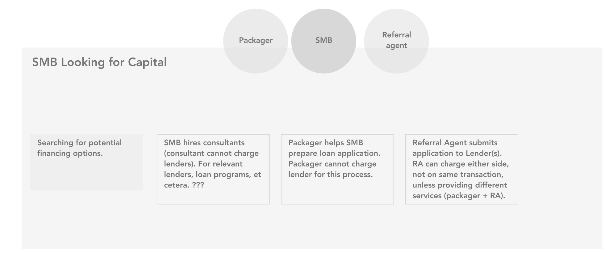
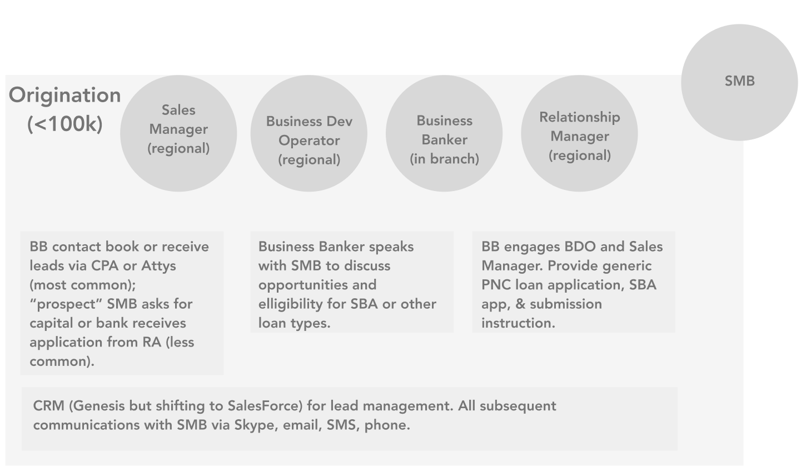
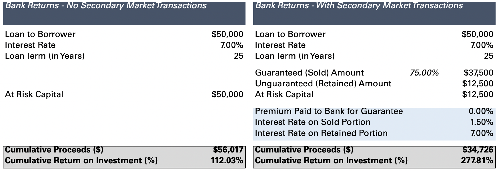
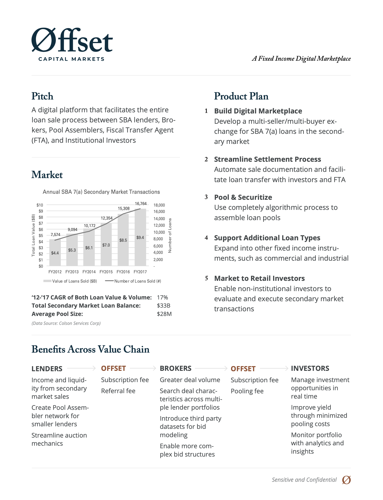
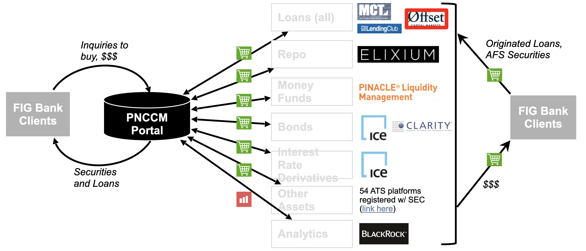
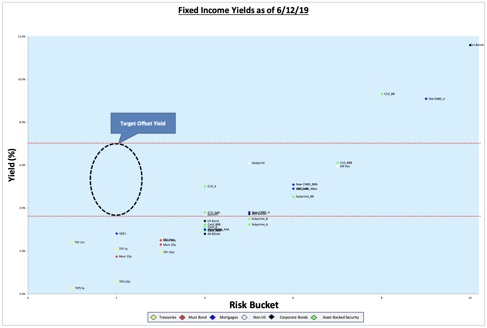
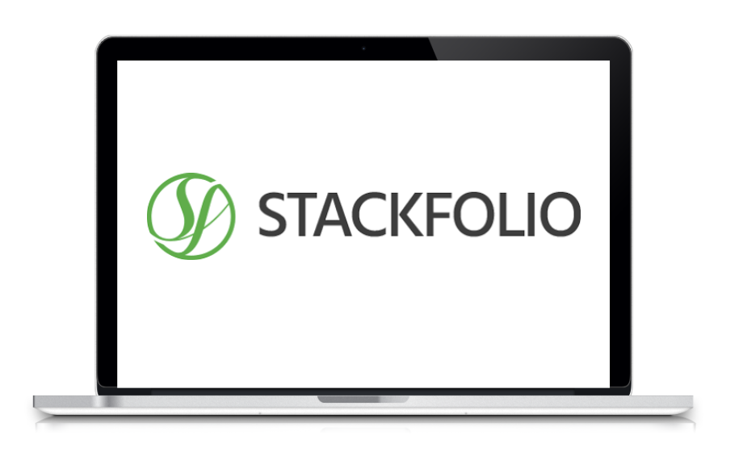
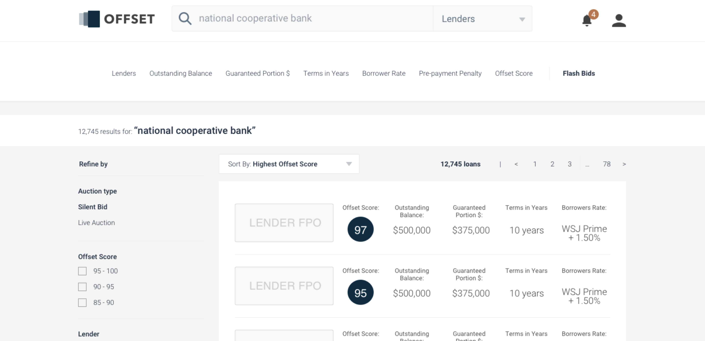
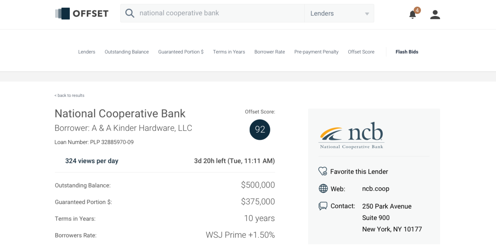

Finding Innovation in SBA Loans
The bank sent me to investigate potential financial opportunities related to Small Business Loans. I was chosen to lead a team since the bank was interested in innovative products that could spin out of the bank and not efficiency plays. I took along a business lead to help with the financial analysis and industry expertise.
Understanding the Lifecycle of an SBA Loan
I interviewed dozens of stakeholders and for each discrete step I outlined who was involved (circles) and what actions were taken (boxes), starting from the beginning of the process when an SMB was looking for a loan:

To origination:

To data gathering on the bank side:

Until we had a model of the entire load process from conception to the bank servicing the loan, all the way until the bank would sell the guaranteed portion of the loan off to a secondary market:
And ended with a finalized flow diagram outlining all parties, actions, and documents.
By that time, I had a hunch that the largest opportunity was in the secondary market where people would splice loans together into credit-rated tranches. The rest of the process was performed in-house with manual processes, but the bank did not currently participate in the secondary market and didn’t have the expertise of Pool Assemblers to splice loans into credit rated tranches.
We did a quick analysis of the money left on the table, and decided that a digital marketplace for guaranteed portions of SBA loans slated to be handed off to the assemblers was a new spin on an old market. Instead of creating sets of loans for sophisticated buyers, why not offer government-backed business loans as investment vehicles for consumers?
Bank returns with secondary market transactions 
Gaining Buy-In at All Levels of the Organization
A one-pager for internal stakeholders to understand the value of the project and how future iterations could seep back into the bank increasing efficiency through the loan process 
Finding a Home in the Bank
PNC bank offered loan management services to smaller banks and FCUs. By piggy-backing on the sales team for those services, we could offer smaller banks alternatives to the broker-assembler groups that these loans were shipped off to. Even if the smaller banks didn’t want to make a big change, assemblers rejected smaller unprofitable loans, and those could still be handed off to our platform to be sold to individual consumers.

Financial Analysis for Consumers
By taking the guaranteed portions of Small Business Loans slated to be chopped and sold on Bloomberg terminals, and offering them to consumers, we saw that we could fill a gap in the market with better Risk to Yield ratios than most current investment opportunities.

Build versus Buy Analysis
For all projects at the bank, or any organization of its scale, there are always conversations about building a product versus buying a company in the market.
Background
Our back of the napkin estimates gave this project a timeline of 12-18 months and cost of 1-3MM to MVP.
Pros of Building
- Greater control of development timeline and quality
- Ability to prioritize / deprioritize all features through continual feedback from PNC clients
- Greenfield initiative reduces risk of inheriting customer contracts with unfavorable terms
- Limited legacy code helps mitigate issues from integrating into other applications (e.g., BlackRock loan portfolio management tool)
Cons of Building
- Challenges associated with generating buy and sell-side demand due to lack of initial transaction volume
- Reliance on PNC (e.g. Origination Team) during near-term until platform matures
- Initial go-to-market strategy (i.e., SBA only) limits volume and value of a marketplace
- Limited subject matter expertise within PNC to effectively capture various market mechanics
- Other digital marketplaces have a head start
Potential Solution
After three months of market and product diligence, the team identified a potential acquisition target that could help mitigate the cons associated with building a digital loan marketplace:

With several desired features:
- Automatically crack any existing loan tape
- Customizable auction parameters
- Track due diligence within the platform
- Integration with LOS to automatically categorize diligence docs
- Buyer-seller communication within the platform
- Research analytics platform
Rationale for Buy Approach
Cons of Building
- Challenges associated with generating buy and sell- side demand due to lack of initial transaction volume
- Reliance on PNC (e.g. Origination Team) during near-term until platform matures
- Initial go-to-market strategy (i.e., SBA only) limits volume and value of a marketplace
- Limited subject matter expertise within PNC to effectively capture various market mechanics
- Other digital marketplaces have a head start
Stackfolio mitigates concerns
- Existing transactions across loan types help create “critical mass” issue for early-stage marketplaces
- Existing sales force and customer base create base business upon which FIG can drive incremental growth
- Supports multiple loan types so declines in the volume of one loan type can be offset by other types
- Several subject matter experts with prior loan trading experience already exist within Stackfolio’s org
- PNC do not need to start from scratch and can inherit best practices / lessons learned
Revenue Model
| Transactions | Research Platform | White Label |
|---|---|---|
| 35-50bps | Subscription Fee | Fee + 15-20bps |
| Per transaction | Monthly or annually | Per transaction |
Valuation of Acquisition
In order to initiate the confirmatory diligence process, the team recommends submitting a non-binding indication of interest to acquire Stackfolio at a valuation multiple between 4.0x and 6.0x Adj. EBITDA
| Valuation Assumptions - Acquisition | |
|---|---|
| Estimated Annual Loan Amount Transacting on Platform | $200,000,000 |
| Estimated Stackfolio Avg. Transaction Fee | 0.43% |
| Estimated Annual Stackfolio Revenue | $850,000 |
| Estimated Adj. EBITDA Margin | 40.00% |
| Estimated Adj. EBITDA | $340,000 |
| Acquisition Multiple | 6.0x |
| Estimated Enterprise Value | $2,040,000 |
Buy versus Build Conclusion
The bank opted to build in-house given our team had the product skills to take this concept to market, and the build costs were trivial compared to the longterm upsides of owning the entire system.
Concept Development
We created a site architecture and pixel-perfect mockups of the final product and handed the project off to the loan team to develop the product in its entirety with their own engineering teams.
List view where consumers can see relevant information for each loan  Individual loan page to view each loan in detail 